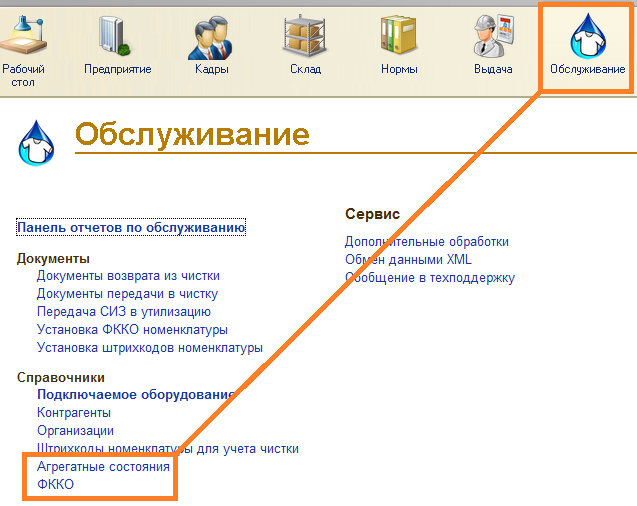

ФККО - Федеральный классификационный каталог отходов
ФККО хранятся в справочнике «ФККО» в разделе «Обслуживание». Агрегатные состояния ФККО хранятся в справочнике «Агрегатные состояния» в разделе «Обслуживание».

Загрузка ФККО производится из формы списка справочника «ФККО». Для этого нужно выбрать блок и нажать кнопку «Загрузить ФККО». При этом производится считывание встроенного в АСТБ классификатора в формате XML, согласно выбранному блоку, и открывается дерево для выбора элементов классификатора для частичной загрузки блока. После выбора элементов для загрузки следует нажать кнопку «ОК».
ФККО определяются по коду. Справочник «Агрегатные состояния» синхронизируется по наименованию. Классы опасности уже вшиты в конфигурацию АСТБ. Блоки загружаются по одному.